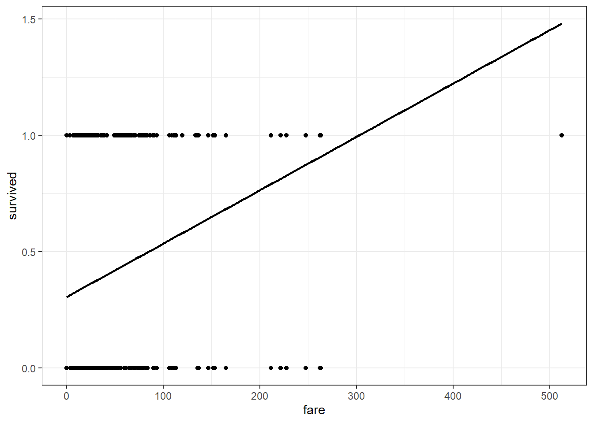
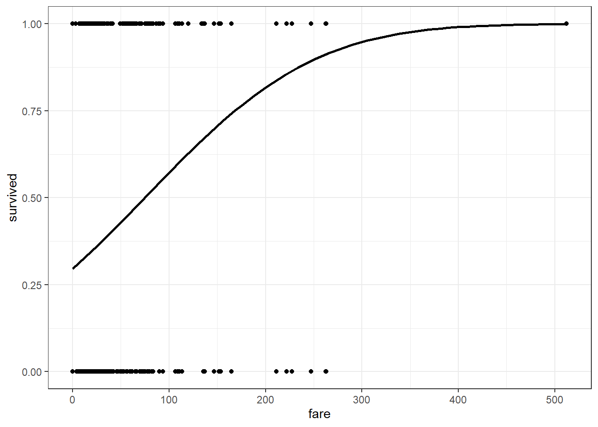
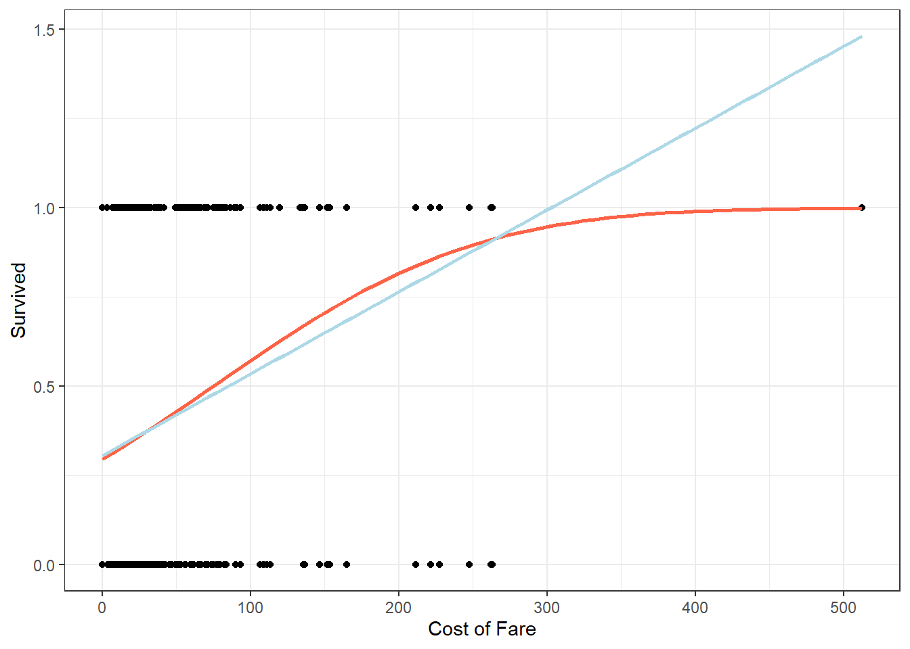

10 Lab IX: Binary Response Models

10.0.1 Preparation
## Packages You May Need
library(knitr)
library(haven) ## install.packages("haven")
library(car) ## install.packages("car")
library(AER) ## install.packages("AER")
library(Hmisc) ## use the describe command
library(mfx) ## for marginal effects calculation
library(tidyverse)
## Loading Data
dta <- read_dta("~/GOVT8002/Spring 2023/Lab X/Ch12_Lab_Titanic.dta")10.1 Use a LPM to estimate the effect of passenger class on survival.
## Creating Variables
dta$pclass_2 <- (dta$pclass == 2)
dta$pclass_3 <- (dta$pclass == 3)
## LPM Model
lpm_1 <- lm(survived ~ pclass_2 + pclass_3, data = dta)
summary(lpm_1)##
## Call:
## lm(formula = survived ~ pclass_2 + pclass_3, data = dta)
##
## Residuals:
## Min 1Q Median 3Q Max
## -0.619 -0.255 -0.255 0.381 0.745
##
## Coefficients:
## Estimate Std. Error t value Pr(>|t|)
## (Intercept) 0.6192 0.0257 24.08 < 2e-16 ***
## pclass_2TRUE -0.1896 0.0378 -5.01 6.2e-07 ***
## pclass_3TRUE -0.3639 0.0310 -11.73 < 2e-16 ***
## ---
## Signif. codes: 0 '***' 0.001 '**' 0.01 '*' 0.05 '.' 0.1 ' ' 1
##
## Residual standard error: 0.462 on 1306 degrees of freedom
## Multiple R-squared: 0.0977, Adjusted R-squared: 0.0963
## F-statistic: 70.7 on 2 and 1306 DF, p-value: <2e-16## Can also use factor(pclass)10.2 Assess the following: did being a women or child affected survival? Did boarding location (a rough proxy for country of origin) affect survival? Ireland is Queenstown (“Q”), France is Cherbourg (“C”) and the Englad is Southampton (“S”). Treat Southampton as the reference category. Control for age in your model.
## Creating Variables
dta$female <- (dta$sex == "female")
dta$child <- (dta$age < 17)
dta$Queensland <- (dta$embarked == "Q")
dta$Cherbourg <- (dta$embarked == "C")
## LPM Model
lpm_2 <- lm(survived ~ pclass_2 + pclass_3 + female + child + Queensland + Cherbourg + age, data = dta)
## Summary Output
summary(lpm_2)##
## Call:
## lm(formula = survived ~ pclass_2 + pclass_3 + female + child +
## Queensland + Cherbourg + age, data = dta)
##
## Residuals:
## Min 1Q Median 3Q Max
## -1.0699 -0.2387 -0.0725 0.2427 1.0243
##
## Coefficients:
## Estimate Std. Error t value Pr(>|t|)
## (Intercept) 0.50200 0.05490 9.14 < 2e-16 ***
## pclass_2TRUE -0.16197 0.03670 -4.41 1.1e-05 ***
## pclass_3TRUE -0.31691 0.03451 -9.18 < 2e-16 ***
## femaleTRUE 0.48862 0.02549 19.17 < 2e-16 ***
## childTRUE 0.08680 0.04448 1.95 0.05128 .
## QueenslandTRUE -0.10059 0.05747 -1.75 0.08037 .
## CherbourgTRUE 0.11348 0.03248 3.49 0.00050 ***
## age -0.00375 0.00112 -3.35 0.00083 ***
## ---
## Signif. codes: 0 '***' 0.001 '**' 0.01 '*' 0.05 '.' 0.1 ' ' 1
##
## Residual standard error: 0.388 on 1038 degrees of freedom
## (263 observations deleted due to missingness)
## Multiple R-squared: 0.381, Adjusted R-squared: 0.377
## F-statistic: 91.4 on 7 and 1038 DF, p-value: <2e-1610.3 For the model from above, what are the minimum and maximum predicted probabilities of survival?
## Finding Min and Max
results_pred <- predict(lpm_2)
max(results_pred)## [1] 1.13min(results_pred)## [1] -0.1810.4 What is the name, age, gender and passenger class of the person with the lowest probability of surviving?
## Extract the "ID" of individual with minimum survival probability
id <- names(results_pred[results_pred == min(results_pred)])
## Look up the person from the original data
dta$name[as.numeric(id)] # name## [1] "Connors, Mr. Patrick"dta$age[as.numeric(id)] # age## [1] 70.5dta$sex[as.numeric(id)] # gender## [1] "male"dta$pclass[as.numeric(id)] # passenger class## [1] 310.5 What is the name of the person with the highest probability of surviving?
## Same as above but now for min
id_1 <- names(results_pred[results_pred == max(results_pred)])
dta$name[as.numeric(id_1)] # name## [1] "Hippach, Miss. Jean Gertrude"dta$age[as.numeric(id_1)] # age## [1] 16dta$sex[as.numeric(id_1)] # gender## [1] "female"dta$pclass[as.numeric(id_1)] # class## [1] 110.6 Estimate a probit model where survival is a function of (only) passenger class. Treat passenger class as a nominal variable. Compare statistical significance to a similar LPM model. Is there an easy way to interpret the coefficients?
## Probit Model
prob_1 <- glm(survived ~ pclass_2 + pclass_3, data = dta,
family = binomial(link = "probit"))
summary(prob_1)##
## Call:
## glm(formula = survived ~ pclass_2 + pclass_3, family = binomial(link = "probit"),
## data = dta)
##
## Deviance Residuals:
## Min 1Q Median 3Q Max
## -1.390 -0.768 -0.768 0.979 1.653
##
## Coefficients:
## Estimate Std. Error z value Pr(>|z|)
## (Intercept) 0.3034 0.0709 4.28 1.9e-05 ***
## pclass_2TRUE -0.4808 0.1038 -4.63 3.6e-06 ***
## pclass_3TRUE -0.9613 0.0873 -11.01 < 2e-16 ***
## ---
## Signif. codes: 0 '***' 0.001 '**' 0.01 '*' 0.05 '.' 0.1 ' ' 1
##
## (Dispersion parameter for binomial family taken to be 1)
##
## Null deviance: 1741.0 on 1308 degrees of freedom
## Residual deviance: 1613.3 on 1306 degrees of freedom
## AIC: 1619
##
## Number of Fisher Scoring iterations: 4## Logit Model
logit_1 <- glm(survived ~ pclass_2 + pclass_3, data = dta,
family = binomial(link = "logit"))
summary(logit_1)##
## Call:
## glm(formula = survived ~ pclass_2 + pclass_3, family = binomial(link = "logit"),
## data = dta)
##
## Deviance Residuals:
## Min 1Q Median 3Q Max
## -1.390 -0.768 -0.768 0.979 1.653
##
## Coefficients:
## Estimate Std. Error z value Pr(>|z|)
## (Intercept) 0.486 0.115 4.24 2.2e-05 ***
## pclass_2TRUE -0.770 0.167 -4.61 4.0e-06 ***
## pclass_3TRUE -1.557 0.143 -10.86 < 2e-16 ***
## ---
## Signif. codes: 0 '***' 0.001 '**' 0.01 '*' 0.05 '.' 0.1 ' ' 1
##
## (Dispersion parameter for binomial family taken to be 1)
##
## Null deviance: 1741.0 on 1308 degrees of freedom
## Residual deviance: 1613.3 on 1306 degrees of freedom
## AIC: 1619
##
## Number of Fisher Scoring iterations: 410.7 Estimate a probit model where survival is a function of passenger class (treated as a nominal variable) age, gender, child and embarkation location. What is the minimum and maximum fitted value?
## Probit Model
prob_2 <- glm(survived ~ pclass_2 + pclass_3 + age + female + child + Queensland + Cherbourg,
data = dta, family = binomial(link = "probit"))
summary(prob_2)##
## Call:
## glm(formula = survived ~ pclass_2 + pclass_3 + age + female +
## child + Queensland + Cherbourg, family = binomial(link = "probit"),
## data = dta)
##
## Deviance Residuals:
## Min 1Q Median 3Q Max
## -2.669 -0.696 -0.424 0.681 2.522
##
## Coefficients:
## Estimate Std. Error z value Pr(>|z|)
## (Intercept) 0.20231 0.21119 0.96 0.33810
## pclass_2TRUE -0.58732 0.13771 -4.27 2e-05 ***
## pclass_3TRUE -1.11893 0.13324 -8.40 < 2e-16 ***
## age -0.01496 0.00443 -3.38 0.00072 ***
## femaleTRUE 1.50184 0.09552 15.72 < 2e-16 ***
## childTRUE 0.23096 0.16872 1.37 0.17103
## QueenslandTRUE -0.38235 0.22862 -1.67 0.09444 .
## CherbourgTRUE 0.41236 0.12201 3.38 0.00073 ***
## ---
## Signif. codes: 0 '***' 0.001 '**' 0.01 '*' 0.05 '.' 0.1 ' ' 1
##
## (Dispersion parameter for binomial family taken to be 1)
##
## Null deviance: 1414.6 on 1045 degrees of freedom
## Residual deviance: 967.1 on 1038 degrees of freedom
## (263 observations deleted due to missingness)
## AIC: 983.1
##
## Number of Fisher Scoring iterations: 5## Logit Model
logit_2 <- glm(survived ~ pclass_2 + pclass_3 + age + female + child + Queensland + Cherbourg,
data = dta, family = binomial(link = "logit"))
summary(logit_2)##
## Call:
## glm(formula = survived ~ pclass_2 + pclass_3 + age + female +
## child + Queensland + Cherbourg, family = binomial(link = "logit"),
## data = dta)
##
## Deviance Residuals:
## Min 1Q Median 3Q Max
## -2.591 -0.687 -0.418 0.666 2.477
##
## Coefficients:
## Estimate Std. Error z value Pr(>|z|)
## (Intercept) 0.35441 0.36614 0.97 0.33305
## pclass_2TRUE -0.98280 0.23931 -4.11 4e-05 ***
## pclass_3TRUE -1.97477 0.23630 -8.36 < 2e-16 ***
## age -0.02580 0.00776 -3.32 0.00089 ***
## femaleTRUE 2.53863 0.17010 14.92 < 2e-16 ***
## childTRUE 0.47857 0.29554 1.62 0.10538
## QueenslandTRUE -0.65048 0.39384 -1.65 0.09861 .
## CherbourgTRUE 0.70367 0.21200 3.32 0.00090 ***
## ---
## Signif. codes: 0 '***' 0.001 '**' 0.01 '*' 0.05 '.' 0.1 ' ' 1
##
## (Dispersion parameter for binomial family taken to be 1)
##
## Null deviance: 1414.6 on 1045 degrees of freedom
## Residual deviance: 964.5 on 1038 degrees of freedom
## (263 observations deleted due to missingness)
## AIC: 980.5
##
## Number of Fisher Scoring iterations: 4## Compute predicted probabilities
prob_pred <- predict(prob_2, type = "response")
max(prob_pred)## [1] 0.982min(prob_pred)## [1] 0.0093## For the logit model
logit_pred <- predict(logit_2, type = "response")
max(logit_pred)## [1] 0.975min(logit_pred)## [1] 0.016510.8 What is the name of the person with the lowest probability of surviving?
## Finding the Name and other demographic factors
id_2 <- names(prob_pred[prob_pred == min(prob_pred)])
dta$name[as.numeric(id_2)]## [1] "Connors, Mr. Patrick"dta$pclass[as.numeric(id_2)]## [1] 3dta$age[as.numeric(id_2)]## [1] 70.5dta$sex[as.numeric(id_2)]## [1] "male"10.9 For the above model, what is the effect of growing one year older (for an adult)? (Do this “manually”, using the observed-value, discrete difference method described in the book/lecture.)
## Generate "P1" - the predicted values at actual values of X
p_1 <- pnorm(coef(prob_2)[1] + coef(prob_2)[2]*dta$pclass_2 + coef(prob_2)[3]*dta$pclass_3 + coef(prob_2)[4]*dta$age + coef(prob_2)[5]*dta$female + coef(prob_2)[6]*dta$child + coef(prob_2)[7]*dta$Queensland + coef(prob_2)[8]*dta$Cherbourg)
## Generate "P2" - the predicted values with age increased by 1
p_2 <- pnorm(coef(prob_2)[1] + coef(prob_2)[2] *dta$pclass_2 + coef(prob_2)[3]*dta$pclass_3 + coef(prob_2)[4]*(dta$age + 1) + coef(prob_2)[5]*dta$female + coef(prob_2)[6]*dta$child + coef(prob_2)[7]*dta$Queensland + coef(prob_2)[8]*dta$Cherbourg)
## Taking the Difference
diff_age <- p_2 - p_1
## Finding the Mean Difference
mean(diff_age, na.rm = T)## [1] -0.00388## The Marginal Effects Way
mean(dnorm(coef(prob_2)[1] + coef(prob_2)[2] *dta$pclass_2 + coef(prob_2)[3]*dta$pclass_3 + coef(prob_2)[4]*dta$age + coef(prob_2)[5]*dta$female + coef(prob_2)[6]*dta$child + coef(prob_2)[7]*dta$Queensland + coef(prob_2)[8]*dta$Cherbourg)*coef(prob_2)[4], na.rm=T)## [1] -0.0038910.10 Compare the probit effect of age to the LPM effect of age in part (b)
They are basically the same.
10.11 What is the effect of the passenger class, female and child variables in the above probit model? Use the mfx package as described in the lecture. Compare the predicted effects of these variables in the probit model to the results in the LPM in part (b). You need only discuss one of these variables, but please note all of them as you do the work.
## Marginal Effects Approach
## Probt Model
probitmfx(prob_2, data = dta, atmean = FALSE)## Call:
## probitmfx(formula = prob_2, data = dta, atmean = FALSE)
##
## Marginal Effects:
## dF/dx Std. Err. z P>|z|
## pclass_2TRUE -0.14472 0.03140 -4.61 4e-06 ***
## pclass_3TRUE -0.30698 0.03449 -8.90 < 2e-16 ***
## age -0.00389 0.00114 -3.42 0.00062 ***
## femaleTRUE 0.48869 0.02805 17.42 < 2e-16 ***
## childTRUE 0.06139 0.04568 1.34 0.17897
## QueenslandTRUE -0.09540 0.05424 -1.76 0.07859 .
## CherbourgTRUE 0.11230 0.03427 3.28 0.00105 **
## ---
## Signif. codes: 0 '***' 0.001 '**' 0.01 '*' 0.05 '.' 0.1 ' ' 1
##
## dF/dx is for discrete change for the following variables:
##
## [1] "pclass_2TRUE" "pclass_3TRUE" "femaleTRUE" "childTRUE" "QueenslandTRUE" "CherbourgTRUE"## Logit Model
logitmfx(logit_2, data = dta, atmean = FALSE)## Call:
## logitmfx(formula = logit_2, data = dta, atmean = FALSE)
##
## Marginal Effects:
## dF/dx Std. Err. z P>|z|
## pclass_2TRUE -0.13885 0.03133 -4.43 9.3e-06 ***
## pclass_3TRUE -0.31215 0.03488 -8.95 < 2e-16 ***
## age -0.00382 0.00119 -3.21 0.0013 **
## femaleTRUE 0.48638 0.02808 17.32 < 2e-16 ***
## childTRUE 0.07302 0.04613 1.58 0.1134
## QueenslandTRUE -0.09259 0.05336 -1.74 0.0827 .
## CherbourgTRUE 0.10949 0.03404 3.22 0.0013 **
## ---
## Signif. codes: 0 '***' 0.001 '**' 0.01 '*' 0.05 '.' 0.1 ' ' 1
##
## dF/dx is for discrete change for the following variables:
##
## [1] "pclass_2TRUE" "pclass_3TRUE" "femaleTRUE" "childTRUE" "QueenslandTRUE" "CherbourgTRUE"10.11.0.1 Extra Plots
## LPM Plot
dta %>%
ggplot(aes(x = fare, y = survived)) +
geom_point() +
stat_smooth(method = "lm", se = FALSE, color = "black") +
theme_bw()
## Probit Plot
dta %>%
ggplot(aes(x = fare, y = survived)) +
geom_point() +
stat_smooth(method = "glm", se = FALSE, color = "black",
method.args = list(family=binomial(link = "probit")))+
theme_bw()
## Both
dta %>%
ggplot(aes(x = fare, y = survived)) +
geom_point() +
stat_smooth(method = "glm", se = FALSE, color = "tomato",
method.args = list(family=binomial(link = "probit"))) +
stat_smooth(method = "lm", se = FALSE, color = "light blue") +
theme_bw() +
labs(y = "Survived", x = "Cost of Fare")